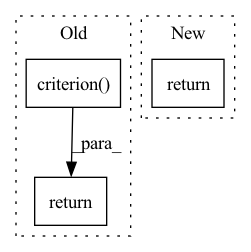

Pattern ID :105

Before Change
seg_out = self.interpolate(dec1, x_size[2:], mode="bilinear")
if self.training:
return self.criterion((seg_out, edge_out), gts)
else:
return seg_out, edge_out
After Change
dec1 = self.final_seg(dec0)
seg_out = self.interpolate(dec1, x_size[2:], mode="bilinear")
return seg_out
In pattern: SUPERPATTERN
Frequency: 3
Non-data size: 3
Instances
Fragment ID: 498498
Project Name: lehduong/knowledge-distillation-by-replacing-cheap-conv
Commit Name: 3d5fdb137ce0c154158b7eb2e62b80ca2a143cd5
Time: 2020-02-23
Author: oopsxilitol@gmail.com
File Name: models/gscnn/gscnn.py
M Class Name: GSCNN
N Class Name: GSCNN
M Method Name: forward(3)
N Method Name: forward(3)
M Parent Class: nn.Module
N Parent Class: nn.Module
M File Name: models/gscnn/gscnn.py
N File Name: models/gscnn/gscnn.py
M Start Line: 308
M End Line: 328
N Start Line: 323
N End Line: 325
'>
Before Change
preds = F.interpolate(preds, size=labels.shape[1:], mode="bilinear", align_corners=False)
n_min = labels[labels != self.ignore_label].numel() // 16
loss = self.criterion(preds, labels).view(-1)
loss_hard = loss[loss > self.thresh]
if loss_hard.numel() < n_min:
loss_hard, _ = loss.topk(n_min)
return torch.mean(loss_hard)
class Dice(nn.Module):
After Change
def forward(self, preds, labels: Tensor) -> Tensor:
if isinstance(preds, list):
return sum([w * self._forward(pred, labels) for (pred, w) in zip(preds, self.aux_weights)])
return self._forward(preds, labels)
'>
Fragment ID: 498497
Project Name: sithu31296/semantic-segmentation
Commit Name: b68900992fb24dd5166b2b34e3d35d19493d747d
Time: 2021-08-21
Author: sithu31296@gmail.com
File Name: utils/losses.py
M Class Name: OhemCrossEntropy
N Class Name: OhemCrossEntropy
M Method Name: forward(3)
N Method Name: forward(3)
M Parent Class: nn.Module
N Parent Class: nn.Module
M File Name: utils/losses.py
N File Name: utils/losses.py
M Start Line: 25
M End Line: 37
N Start Line: 46
N End Line: 49
'>
Before Change
score = F.upsample(
input=score, size=(h, w), mode="bilinear")
loss = self.criterion(score, target)
return loss
class OhemCrossEntropy(nn.Module):
def __init__(self, ignore_label=-1, thres=0.7,
After Change
weights = config.LOSS.BALANCE_WEIGHTS
assert len(weights) == len(score)
return sum([w * self._forward(x, target) for (w, x) in zip(weights, score)])
class OhemCrossEntropy(nn.Module):
'>
Fragment ID: 498495
Project Name: chenjun2hao/ddrnet.pytorch
Commit Name: 3ce340bc520946fb220e83075f6e015bbe87cfe5
Time: 2019-12-12
Author: hsfzxjy@gmail.com
File Name: lib/core/criterion.py
M Class Name: CrossEntropy
N Class Name: CrossEntropy
M Method Name: forward(3)
N Method Name: forward(3)
M Parent Class: nn.Module
N Parent Class: nn.Module
M File Name: lib/core/criterion.py
N File Name: lib/core/criterion.py
M Start Line: 20
M End Line: 28
N Start Line: 36
N End Line: 42